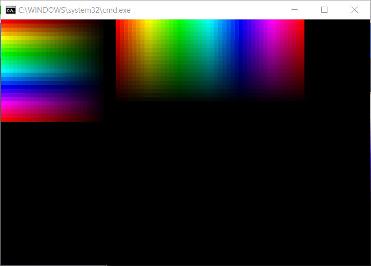

Sorry to dig this up, but I thought maybe it might be useful to post a VT100 solution for WIN 10 PCs..
HSL

Code: Select all
@echo off & setlocal enabledelayedexpansion
mode 90,60
for /F %%a in ('echo prompt $E^| cmd') do set "ESC=%%a"
Set /a s=10000, v1=10000
For /L %%h in (0,15,360) do (
For /L %%v in (10000,-400,0) do call :plot_HSL_RGB %%h !s! %%v
if !v1! geq 0 ( <nul set /p "=%esc%[38;2;0;0;0mÛ"
<nul set /p "=%esc%[38;2;0;0;0mÛ"
For /L %%l in (0,8,360) do call :plot_HSL_RGB %%l !s! !v1!
set /a v1=v1-500
)
echo(
)
pause
exit /b
:Plot_HSL_RGB H S L
rem H=0..360 S=0..10000 L=0..10000
set /a H=%1, S=%2, L=%3
rem When 0 <= H < 360, 0 <= S <= 1 and 0 <= L <= 1:
if !H! equ 360 set /a H=0
if !H! lss 0 echo ERROR! & goto :EOF
set /a va=2*L-10000
if !va! lss 0 set /a va=-va
set /a C=(10000-va)*S/10000
set /a "h1=h*10000/60, mm = (h1 %% 20000) - 10000"
if !mm! lss 0 set /a mm=-mm
set /a X = C *(10000 - mm)/10000 , m = L - C/2
rem (R,G,B) = (R'+m, G'+m, B'+m)
if !H! lss 60 (set /a R=C+m, G=X+m, B=0+m) else (
if !H! lss 120 (set /a R=X+m, G=C+m, B=0+m) else (
if !H! lss 180 (set /a R=0+m, G=C+m, B=X+m) else (
if !H! lss 240 (set /a R=0+m, G=X+m, B=C+m) else (
if !H! lss 300 (set /a R=X+m, G=0+m, B=C+m) else (
if !H! lss 360 (set /a R=C+m, G=0+m, B=X+m) else (echo ERROR!)
)
)
)
)
)
set /a R=R*255/10000, G=G*255/10000, B=B*255/10000
<nul set /p "=%esc%[38;2;!R!;!G!;!B!mÛ"
goto :eof
HSV

Code: Select all
@echo off & setlocal enabledelayedexpansion
mode 90,60
for /F %%a in ('echo prompt $E^| cmd') do set "ESC=%%a"
Set /a s=10000, v1=10000
For /L %%h in (0,15,360) do (
For /L %%v in (10000,-400,0) do call :plot_HSV_RGB %%h !s! %%v
if !v1! geq 0 ( <nul set /p "=%esc%[38;2;0;0;0mÛ"
<nul set /p "=%esc%[38;2;0;0;0mÛ"
For /L %%l in (0,8,360) do call :plot_HSV_RGB %%l !s! !v1!
set /a v1=v1-500
)
echo(
)
pause
exit /b
:::::::::::::::::::::::::::::::::::::::::::
:Plot_HSV_RGB H S V
rem H=0..360 S=0..10000 V=0..10000
set /a H=%1, S=%2, V=%3
rem When 0 <= H < 360, 0 <= S <= 1 and 0 <= V <= 1:
if !H! equ 360 set /a H=0
if !H! lss 0 echo ERROR! & goto :EOF
set /a "h1=h*10000/60, mm = (h1 %% 20000) - 10000"
if !mm! lss 0 set /a mm=-mm
set /a C = (V * S) / 10000
set /a "X = C *(10000 - mm)/10000 , m = V - C"
rem (R,G,B) = (R'+m, G'+m, B'+m)
if !H! lss 60 (set /a R=C+m, G=X+m, B=0+m) else (
if !H! lss 120 (set /a R=X+m, G=C+m, B=0+m) else (
if !H! lss 180 (set /a R=0+m, G=C+m, B=X+m) else (
if !H! lss 240 (set /a R=0+m, G=X+m, B=C+m) else (
if !H! lss 300 (set /a R=X+m, G=0+m, B=C+m) else (
if !H! lss 360 (set /a R=C+m, G=0+m, B=X+m) else (echo ERROR!)
)))))
set /a "R=R*255/10000, G=G*255/10000, B=B*255/10000"
<nul set /p "=%esc%[38;2;!R!;!G!;!B!mÛ"
exit /b